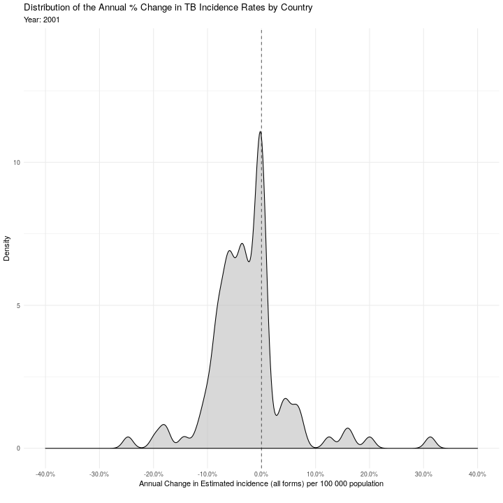

Last week the UK pledged to contribute £467m a year for three years to the Global Fund. The money will be spent on: providing tuberculosis (TB) treatment for more than two million people; 90 million mosquito nets to protect people from malaria; and treatment for more than three million people living with HIV. This funding will drastically improve many peoples lives and needs to be celebrated even if it comes from a broadly unpopular source.
Whilst the Global Fund has helped save more than 27 million lives since 2002 all three diseases continue to have a devastating impact with TB remaining as one of the top ten causes of death worldwide, and the number one cause of death from an infectious disease. More research and funding is needed to continue to reduce the incidence, and negative consequences, of these diseases.
In this post, I will be celebrating this funding by repeating/adapting some previous work visualising trends in Tuberculosis (TB) incidence rates but now using GIFs. The starting point for this post is the storyboard below (from a previous post). Using the code for each plot I will work through animating them using gganimate (by Thomas Lin Pedersen).

This storyboard shows the trends in regional/global TB incidence rates, as well as the annual percentage change in incidence rates, both globally, and on a country level (ridge plots). getTBinR was used to produce all of the figures excepting the ridge plots which were generated using ggridges. See here for a full size version.
{kind=link}
gganimate was recently reworked to be a complimentary grammar to that used in ggplot - rather than as an additional dimension of it. The rework comes with some interesting new features - the release post is well worth a read! Another motivation for this post is to explore some of these features.
Packages
Here we use pacman to handle downloading and loading the required rstats packages. See the comments below for external dependencies.
## Get required packages - managed using pacman
if (!require(pacman)) install.packages("pacman"); library(pacman)
p_load("getTBinR")
p_load("tidyverse")
p_load("scales")
p_load("viridis")
p_load("gifski") ##requires cargo on ubuntu
p_load("magick") ## requires libmagick++-dev on ubuntu
p_load_gh("thomasp85/gganimate")Data
getTbinR handles downloading and cleaning the TB surveillance data provided by the World Health Organization. See here for details.
## Pull TB data
tb_burden <- get_tb_burden(verbose = FALSE)
tb_burden## # A tibble: 3,850 x 68
## country iso2 iso3 iso_numeric g_whoregion year e_pop_num e_inc_100k
## <chr> <chr> <chr> <int> <chr> <int> <int> <dbl>
## 1 Afghan… AF AFG 4 Eastern Me… 2000 20093756 190
## 2 Afghan… AF AFG 4 Eastern Me… 2001 20966463 189
## 3 Afghan… AF AFG 4 Eastern Me… 2002 21979923 189
## 4 Afghan… AF AFG 4 Eastern Me… 2003 23064851 189
## 5 Afghan… AF AFG 4 Eastern Me… 2004 24118979 189
## 6 Afghan… AF AFG 4 Eastern Me… 2005 25070798 189
## 7 Afghan… AF AFG 4 Eastern Me… 2006 25893450 189
## 8 Afghan… AF AFG 4 Eastern Me… 2007 26616792 189
## 9 Afghan… AF AFG 4 Eastern Me… 2008 27294031 189
## 10 Afghan… AF AFG 4 Eastern Me… 2009 28004331 189
## # … with 3,840 more rows, and 60 more variables: e_inc_100k_lo <dbl>,
## # e_inc_100k_hi <dbl>, e_inc_num <int>, e_inc_num_lo <int>,
## # e_inc_num_hi <int>, e_tbhiv_prct <dbl>, e_tbhiv_prct_lo <dbl>,
## # e_tbhiv_prct_hi <dbl>, e_inc_tbhiv_100k <dbl>,
## # e_inc_tbhiv_100k_lo <dbl>, e_inc_tbhiv_100k_hi <dbl>,
## # e_inc_tbhiv_num <int>, e_inc_tbhiv_num_lo <int>,
## # e_inc_tbhiv_num_hi <int>, e_mort_exc_tbhiv_100k <dbl>,
## # e_mort_exc_tbhiv_100k_lo <dbl>, e_mort_exc_tbhiv_100k_hi <dbl>,
## # e_mort_exc_tbhiv_num <int>, e_mort_exc_tbhiv_num_lo <int>,
## # e_mort_exc_tbhiv_num_hi <int>, e_mort_tbhiv_100k <dbl>,
## # e_mort_tbhiv_100k_lo <dbl>, e_mort_tbhiv_100k_hi <dbl>,
## # e_mort_tbhiv_num <int>, e_mort_tbhiv_num_lo <int>,
## # e_mort_tbhiv_num_hi <int>, e_mort_100k <dbl>, e_mort_100k_lo <dbl>,
## # e_mort_100k_hi <dbl>, e_mort_num <int>, e_mort_num_lo <int>,
## # e_mort_num_hi <int>, cfr <dbl>, cfr_lo <dbl>, cfr_hi <dbl>,
## # c_newinc_100k <dbl>, c_cdr <dbl>, c_cdr_lo <dbl>, c_cdr_hi <dbl>,
## # source_rr_new <chr>, source_drs_coverage_new <chr>,
## # source_drs_year_new <int>, e_rr_pct_new <dbl>, e_rr_pct_new_lo <dbl>,
## # e_rr_pct_new_hi <dbl>, e_mdr_pct_rr_new <int>, source_rr_ret <chr>,
## # source_drs_coverage_ret <chr>, source_drs_year_ret <int>,
## # e_rr_pct_ret <dbl>, e_rr_pct_ret_lo <dbl>, e_rr_pct_ret_hi <dbl>,
## # e_mdr_pct_rr_ret <int>, e_inc_rr_num <int>, e_inc_rr_num_lo <int>,
## # e_inc_rr_num_hi <int>, e_mdr_pct_rr <int>,
## # e_rr_in_notified_pulm <int>, e_rr_in_notified_pulm_lo <int>,
## # e_rr_in_notified_pulm_hi <int>## Pull the data dictionarty
tb_dict <- get_data_dict(verbose = FALSE)
tb_dict## # A tibble: 470 x 4
## variable_name dataset code_list definition
## <chr> <chr> <chr> <chr>
## 1 budget_cpp_ds… Budget "" Average cost of drugs budgeted per pat…
## 2 budget_cpp_mdr Budget "" Average cost of drugs budgeted per pat…
## 3 budget_cpp_xdr Budget "" Average cost of drugs budgeted per pat…
## 4 budget_fld Budget "" Budget required for drugs to treat dru…
## 5 budget_lab Budget "" Budget required for laboratory infrast…
## 6 budget_mdrmgt Budget "" Budget required for programme costs to…
## 7 budget_orsrvy Budget "" Budget required for operational resear…
## 8 budget_oth Budget "" Budget required for all other budget l…
## 9 budget_patsup Budget "" Budget required for patient support (U…
## 10 budget_prog Budget "" Budget required for programme costs to…
## # … with 460 more rowsSetup
The first step (though not the most exciting) is to define what size all the gifs in this post should be.
gif_width <- 720
gif_height <- 720Regional TB incidence rates
The code below uses some of the built-in in functionality from getTBinR to generate a summary figure showing trends in regional TB incidence rates. gganimate::transition_reveal is then used to make this ggplot into a GIF that reveals a data point at a time. The gganimate::transition_ family of functions interpret the plot data in order to somehow distribute it over a number of frames. See the gganimate documentation for the full list of transitions.
## Regional and Global TB incidence rates over time
regional_incidence <- plot_tb_burden_summary(conf = NULL, compare_to_world = FALSE) +
labs(title = "Tuberculosis (TB) Incidence Rates",
subtitle = "By Region",
caption = "") +
facet_wrap(~Area, scales = "free_y") +
theme(legend.position = "none", plot.title = element_text(size=22)) +
##gganimate code
transition_reveal(year)
## Animate
regional_incidence_gif <- animate(regional_incidence,
width = gif_width,
height = gif_height)
## Print
regional_incidence_gif
Summarise the annual percentage change in TB incidence rates.
We again use some of the functionality from getTbinR to estimate the annual percentage in TB incidence rates globally.
## Summarise global changes
global_tb <- summarise_tb_burden(compare_to_world = TRUE,
annual_change = TRUE,
stat = "rate",
verbose = FALSE) %>%
filter(area == "Global")Here ggplot is used to produce a basic line plot and then gganimate is used to turn this into a GIF (as above).
## Global annual change
global_annual_change <- ggplot(global_tb, aes(year, e_inc_num)) +
geom_line(col = "black", size = 1.4, alpha = 0.6) +
## geom_point needs a year based group so that it renders correctly in the gif
geom_point(size = 1.6, alpha = 1, col = "black", aes(group = seq_along(year))) +
scale_y_continuous(label = scales::percent, minor_breaks = NULL, breaks = seq(-0.025, 0, 0.0025)) +
theme_minimal() +
labs(
y = "Annual % Change",
x = "Year",
title = "Global Annual % Change in Tuberculosis Incidence Rates",
caption = ""
) +
##gganimate code
transition_reveal(year)
## Animate the gif
global_annual_change_gif <- animate(global_annual_change, width = gif_width, height = gif_height)
## Print
global_annual_change_gif
Country level annual percentage change in TB incidence rates.
This repeats the steps from above but rather than summarising everything at a global level keeps the country level data. Countries with low incidence rates (< 10 per 100,000) or with very few cases (< 1000) have been filtered out to reduce the noise in the data.
## Remove countries with incidence below 1000 or incidence rates below 10 per 100,000 to reduce noise and cal country level annual change.
countries_with_tb_burden <- tb_burden %>%
filter(year == 2017,
e_inc_100k > 10,
e_inc_num > 1000) %>%
pull(country)
tb_annual_change <- summarise_tb_burden(countries = countries_with_tb_burden,
compare_to_region = FALSE,
compare_to_world = FALSE,
metric = "e_inc_100k",
annual_change = TRUE,
stat = "mean",
verbose = FALSE) %>%
mutate(annual_change = e_inc_100k) %>%
left_join(tb_burden %>%
select(country, g_whoregion),
by = c("area" = "country")) %>%
drop_na(g_whoregion)We now define a density plotting function for this data.
## Function to plot annual change
plot_annual_change <- function(df, strat = NULL, title = NULL, subtitle = NULL, years = 2000:2017) {
dist <- df %>%
filter(year %in% years) %>%
rename(Region = g_whoregion) %>%
mutate(year = year %>%
factor(ordered = TRUE) %>%
fct_rev) %>%
ggplot(aes_string(x = "annual_change", fill = strat)) +
geom_density(alpha = 0.6) +
scale_color_viridis(discrete = TRUE, end = 0.9) +
scale_fill_viridis(discrete = TRUE, end = 0.9) +
geom_vline(xintercept = 0, linetype = 2, alpha = 0.6) +
scale_x_continuous(labels = scales::percent, breaks = seq(-0.4, 0.4, 0.1),
limits = c(-0.4, 0.4), minor_breaks = NULL) +
theme_minimal() +
theme(legend.position = "none") +
labs(x = paste0("Annual Change in ", search_data_dict("e_inc_100k")$definition),
y = "Density",
title = title,
subtitle = subtitle,
caption = "")
return(dist)
}Using plot_annual_change we can now generate first a ggplot density of plot of the annual percentage change in countries TB incidence rates. This is again transformed into a GIF using gganimate.
Rather than using gganimate::transition_reveal as before, here we use gganimate::transition_states followed by gganimate::shadow_trail. Also, rather than revealing a data point each time, we plot a single density plot for each group instead (here that grouping is by year) and leave a shadow of the previous density plots. {frame} has been used here to show which year is being plotted. Note we could have used transition_time and {frame_time} here but this was producing an error for me.
overall <- plot_annual_change(tb_annual_change, "'grey'",
years = 2001:2017,
title = "Distribution of the Annual % Change in TB Incidence Rates by Country",
subtitle = "Year: {2001 + round(16 * frame / nframes, 0)}") +
scale_fill_manual(values = "grey") +
## gganimate code
transition_states(year) +
shadow_trail(alpha = alpha / 10, colour = "grey")
## Animate
overall_gif <- animate(overall, width = gif_width, height = gif_height)
## Print
overall_gif
As above, this plots density of the annual percentage change in countries TB incidence rates but now stratified by region.
region <- plot_annual_change(tb_annual_change, "Region",
title = "Distribution of the Annual % Change in TB Incidence Rates by Country",
subtitle = "By Region - Year: {2001 + round(16 * frame / nframes, 0)}",
years = 2001:2017) +
facet_wrap(~Region, scales = "free_y") +
labs(caption = "@seabbs | Using #getTBinR and #gganimate | Data sourced from: World Health Organization") +
## gganimate code
transition_states(year) +
shadow_trail(alpha = alpha / 10, colour = "grey")
## Animate
region_gif <- animate(region, width = gif_width, height = gif_height)
## Print
region_gif
Build a storyboard GIF
The code generates a storyboard GIF made up of all the GIFs in this post. It is based on a great example by Matt Crump, using magick to attach the individual images in each GIF together. See here for a full size version of the storyboard and here for a static image of the end result
{kind=link}
{kind=link}
## Read in gif images
regional_incidence_mgif <- image_read(regional_incidence_gif)
global_annual_change_mgif <- image_read(global_annual_change_gif)
overall_mgif <- image_read(overall_gif)
region_mgif <- image_read(region_gif)
## Combine first image into a single storyboard
storyboard_gif <- image_append(c(
image_append(c(regional_incidence_mgif[1], global_annual_change_mgif[1])),
image_append(c(overall_mgif[1], region_mgif[1]))),
stack = TRUE
)
## Loop through each frame, compose a storyboard, and add to storyboard gif
for (i in 2:100) {
storyboard_gif <- c(storyboard_gif,
image_append(c(
image_append(c(regional_incidence_mgif[i], global_annual_change_mgif[i])),
image_append(c(overall_mgif[i], region_mgif[i]))),
stack = TRUE
))
}
## Save the gif - warning this takes around 10 minutes on my machine (https://www.samabbott.co.uk/post/building-an-rstats-workstation/)
anim_save("../../static/img/getTBinR/storyboard-gif.gif", storyboard_gif)
Wrap-up
Hopefully this post was a fun way of celebrating the UK’s funding commitment to the Global Fund and provided some insights into how to make GIFs in rstats. In terms of understanding the data I am not sure that using GIFs here offers much over the previous implementation but I am very happy to be proved wrong - let me know what you think. The map from the original storyboard was not reproduced as a GIF as there was no easy way to do so using the original code - watch this space.
For other examples of using getTBinR to visualise the WHO TB data see my gists, previous blog posts, and the getTBinR website. To start using getTBinR in your browser see here for a shiny app or here for an Rstudio client hosted by mybinder.org. Tweet at me if you use any of these resources to make something!
gganimate has a great wiki with numerous other examples as well as a detailed vignette. There is alot more functionality than that covered here so I recommended diving in with a dataset and seeing what you can create.
If interested in TB research see here for a list of my papers/preprints and here for the corresponding, fully reproducible, code.